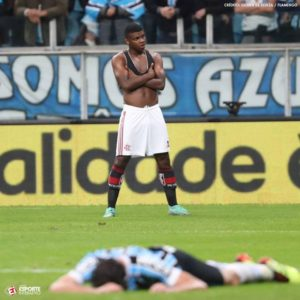
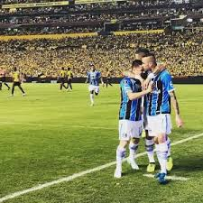
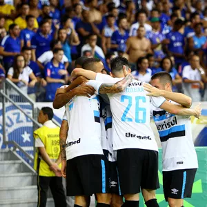

O Flamengo foi fundado em 17 de novembro de 1895 para as disputas de remo. A entrada da equipe no futebol aconteceu em 1912. Atualmente, o time rubro-negro é o maior vencedor da história do Campeonato Carioca, com 31 títulos. Segundo diversas pesquisas, é o clube com o maior número de torcedores do País. Os dois principais títulos da história do Flamengo ocorreram em 1981. Comandado pelo ídolo Zico, o time conquistou a Copa Libertadores da América, em final contra o Cobreloa, do Chile, e o Mundial Interclubes, diante do Liverpool, da Inglaterra. Foi na década de 1980, também, que o Flamengo conquistou o seu primeiro Campeonato Brasileiro.
- Copa Intercontinental - 2
- Copa Libertadores da América - 3
- Campeonato Brasileiro - 8
- Campeonato Paulista - 22
- 1° Artilheiro Pelé com 1091 gols
- 2° Artilheiro Pépe com 405 gols
- 3° Artilheiro Coutinho com 370 gols
- 4° Artilheiro Toninho Guerreiro 283 gols
O Santos Futebol Clube, popularmente conhecido como Santos, é um clube poliesportivo brasileiro sediado na cidade litorânea de Santos. Fundado em 14 de abril de 1912, tornou-se no futebol um dos clubes mais bem-sucedidos do Brasil e reconhecidos mundialmente. O Santos ficou famoso na década de 60 pelos vários títulos internacionais e nacionais conquistados e por ter revelado Pelé, considerado o melhor jogador do século pela FIFA e também o maior artilheiro da história do Santos e da Seleção Brasileira. Suas cores são o branco e o preto, sendo que o seu uniforme tradicional é inteiramente branco. Manda as suas partidas emseupróprio estádio, a Vila Belmiro, mas ocasionalmente desloca seus jogos ao Pacaembu.
| Jogos | lances |
| Grêmio X Flamengo |  |
| Grêmio X Barcelona-EQD |  |
| Grêmio X Cruzeiro |  |
Foi por meio do paulista Cândido Dias da Silva, que trabalhava em Porto Alegre, que o Grêmio surgiu. A história é curiosa: houve uma partida de futebol para exibição do esporte, na capital gaúcha, com jogadores convidados ingleses e alemães. Durante a partida, a bola estourou e Cândido, que tinha uma bola em mãos, mas não sabia jogar, emprestou a sua para viabilizar o término da partida. Ao final do jogo, os jogadores ensinaram a Cândido as regras do esporte, e também a como montar um clube. Assim, com trinta e dois participantes presentes, em 15 de setembro de 1903, fundou-se o Grêmio Foot-Ball Porto Alegrense.